Chanderi
PeakingChanderi, Madhya Pradesh. Light, sheer, with a subtle sheen; cotton, silk or silk-cotton.
Festive 26PeakingSummer 27PeakingFestive 27PeakingSummer 28PeakingFestive 28PeakingSourcing Guide · India 2026–28
Where India's key weaves and hand-crafts come from, what they are like, what they suit, and where each one sits in the trend cycle.
Forecut Editorial · 11 October 2026
Download PDF ↓Handloom and silk lead the quiet-luxury direction. True handloom has longer lead times and minimums: use it for hero pieces.
| Name | Origin / cluster | Character | Best for | Festive 26 | Sourcing note |
|---|---|---|---|---|---|
| Chanderi | Chanderi, Madhya Pradesh | Light, sheer, with a subtle sheen; cotton, silk or silk-cotton. | Kurtas, sarees, dupattas, Nehru jackets | Peaking | Handloom Chanderi carries a GI tag; powerloom Chanderi-look fabric works for value ranges. |
| Maheshwari | Maheshwar, Madhya Pradesh | Fine cotton-silk with distinctive reversible borders. | Sarees, kurta sets, dupattas | Rising | Small weaver clusters; plan for longer lead times. |
| Jamdani | West Bengal (and Bangladesh) | Fine cotton with motifs woven in by hand on the loom. | Sarees, kurtas, dupattas | Rising | Labour-intensive and slow; best for premium hero pieces. |
| Handspun khadi | Across India, through khadi institutions | Handspun, handwoven; now in cotton, silk, wool and linen. | Kurtas, shirts, jackets, everyday wear | Emerging | Texture varies by batch; approve swatches per lot. |
| Banarasi brocade | Varanasi, Uttar Pradesh | Rich woven brocade with zari patterns. | Wedding sarees, lehengas, Nehru jackets | Peaking | GI-tagged; reworked vintage Banarasi is an emerging premium story. |
| Kanjeevaram silk | Kanchipuram, Tamil Nadu | Heavy mulberry silk with contrast borders. | Wedding sarees, and now menswear | Peaking | GI-tagged; high cost, best for occasion and bridal. |
| Tussar silk | Bihar, Jharkhand, Chhattisgarh and Odisha | Textured wild silk with a natural gold tone. | Sarees, kurtas, menswear, jackets | Rising | Natural colour varies; good for quiet luxury. |
| Bhagalpur silk | Bhagalpur, Bihar | Soft, textured silk with a matte handle. | Structured gowns, sarees, stoles | Emerging | An emerging premium story from Bihar. |
| Raw silk | Silk clusters across India | Textured, slubby silk with body. | Bandhgalas, lehengas, kurtas | Peaking | Holds structure well for tailoring. |
| Organza | Varanasi and Surat mills | Sheer, crisp and photogenic. | Lehengas, dupattas, sarees, overlays | Peaking | At its peak; plan to reduce from Festive 27. |
| Tissue | Varanasi and Surat mills | Metallic sheen woven with zari. | Evening sarees, lehengas, dupattas | Rising | Delivers shine without heavy embroidery. |
| Cotton silk | Widely available | Comfortable, breathable, with a light sheen. | Everyday ethnic: kurtas, sarees, sets | Peaking | A dependable value-to-mid base fabric. |
| Linen | Mills across India | Breathable, textured, crisp. | Summer kurtas, co-ords, shirts | Rising | Rises again for Summer weddings. |
| Natural-dyed fabrics | Craft clusters in Rajasthan, Gujarat and beyond | Plant-based dyes with soft, uneven colour. | Premium kurtas, sarees, scarves | Emerging | Slow process; tell the story on the label. |
Placement work at necklines, cuffs and borders keeps cost and weight under control.
| Name | Origin / cluster | Character | Best for | Festive 26 | Sourcing note |
|---|---|---|---|---|---|
| Mirror work | Kutch, Gujarat and Rajasthan | Small mirrors (shisha) stitched onto fabric. | Kurtas, jackets, bags, footwear | Rising | Use flat-backed mirrors; keep away from friction areas. |
| Chikankari | Lucknow, Uttar Pradesh | Fine white-on-white shadow and knot embroidery. | Kurtas, sarees, menswear | Peaking | GI-tagged; works best on fine cotton or georgette. |
| Zardozi | Lucknow, Agra and other centres | Heavy metallic thread embroidery. | Bridal and wedding wear | Peaking | Use as placement work to control cost and weight. |
| Tone-on-tone embroidery | Machine and hand embroidery units | Embroidery in the same colour as the base. | Necklines, cuffs, yokes on kurtas and jackets | Rising | The quiet-luxury replacement for contrast work. |
| Rabari embroidery | Kutch, Gujarat | Bold chain stitch and mirror motifs from Rabari communities. | Jackets, kurtas, accessories | Emerging | Partner with artisan groups and credit them. |
| Kantha | West Bengal | Running-stitch embroidery, traditionally layered. | Jackets, sneakers, stoles | Emerging | Moving onto sneakers and streetwear. |
| Gota patti | Rajasthan | Appliqué with gold or silver ribbon. | Lehengas, dupattas, festive kurtas | Peaking | Lightweight shine for festive. |
| Block print | Bagru and Sanganer, Rajasthan | Hand-carved wooden blocks printed by hand. | Kurtas, co-ords, home and resort wear | Peaking | Approve strike-offs; irregularity is part of the appeal. |
| Bandhani | Gujarat and Rajasthan | Tie-dye with tiny resist dots. | Dupattas, sarees, festive sets | Rising | Rising for Festive 26 and 27. |
| Ikat | Pochampally (Telangana), Odisha, Patan (Gujarat) | Yarns dyed before weaving for a blurred pattern. | Sarees, kurtas, shirts, jackets | Rising | A natural fit with the indigo colour story. |
Chanderi, Madhya Pradesh. Light, sheer, with a subtle sheen; cotton, silk or silk-cotton.
Festive 26PeakingSummer 27PeakingFestive 27PeakingSummer 28PeakingFestive 28Peaking
Maheshwar, Madhya Pradesh. Fine cotton-silk with distinctive reversible borders.
Festive 26RisingSummer 27PeakingFestive 27PeakingSummer 28PeakingFestive 28Fading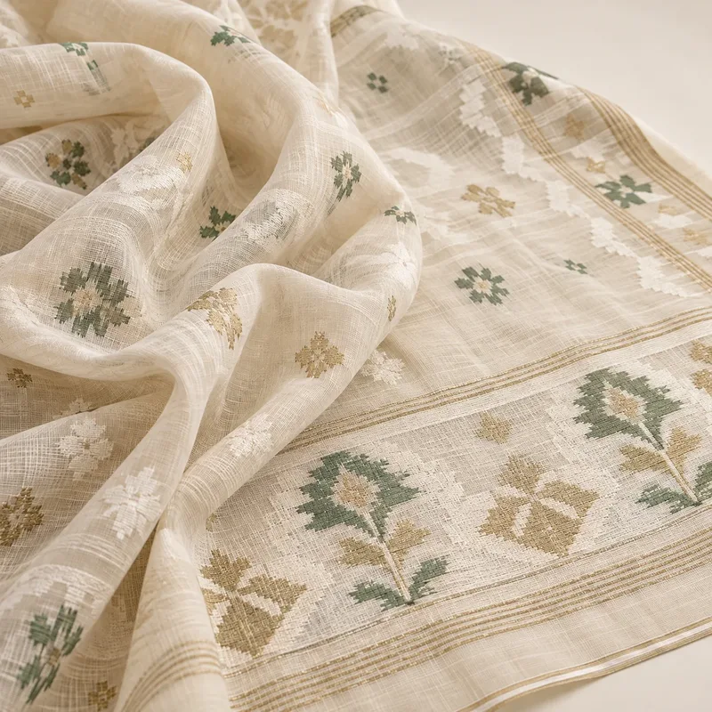
West Bengal (and Bangladesh). Fine cotton with motifs woven in by hand on the loom.
Festive 26RisingSummer 27RisingFestive 27PeakingSummer 28PeakingFestive 28Fading
Across India, through khadi institutions. Handspun, handwoven; now in cotton, silk, wool and linen.
Festive 26EmergingSummer 27RisingFestive 27RisingSummer 28PeakingFestive 28Peaking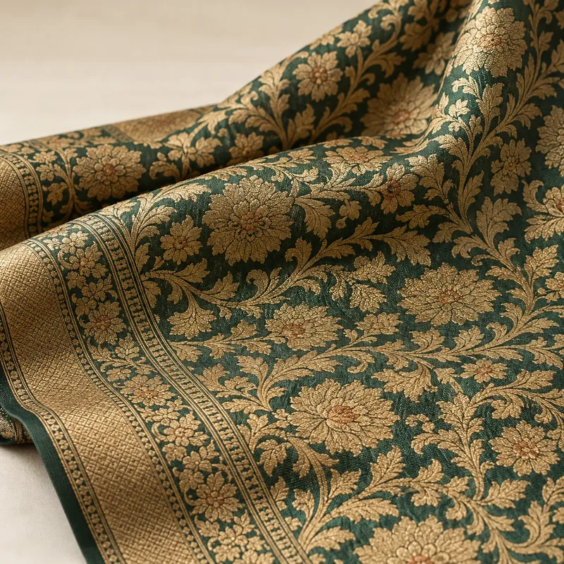
Varanasi, Uttar Pradesh. Rich woven brocade with zari patterns.
Festive 26PeakingSummer 27–Festive 27PeakingSummer 28–Festive 28Peaking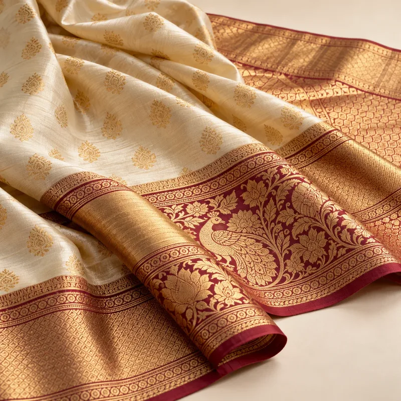
Kanchipuram, Tamil Nadu. Heavy mulberry silk with contrast borders.
Festive 26PeakingSummer 27–Festive 27PeakingSummer 28–Festive 28Peaking
Bihar, Jharkhand, Chhattisgarh and Odisha. Textured wild silk with a natural gold tone.
Festive 26RisingSummer 27RisingFestive 27PeakingSummer 28PeakingFestive 28Fading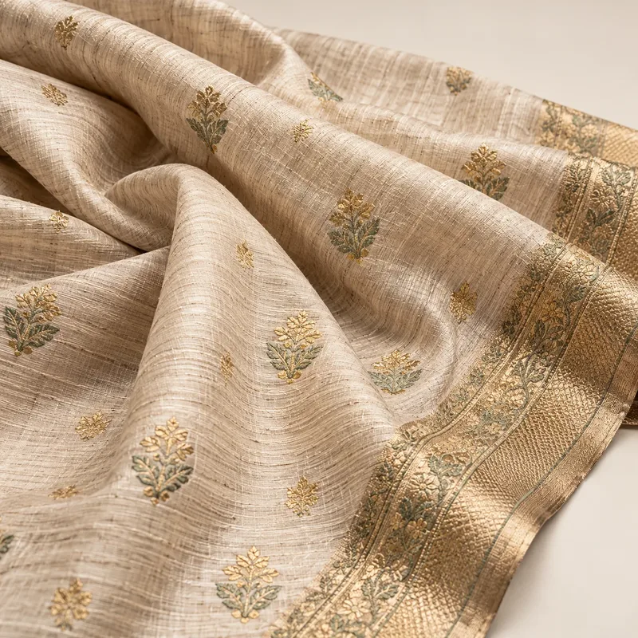
Bhagalpur, Bihar. Soft, textured silk with a matte handle.
Festive 26EmergingSummer 27RisingFestive 27RisingSummer 28PeakingFestive 28Peaking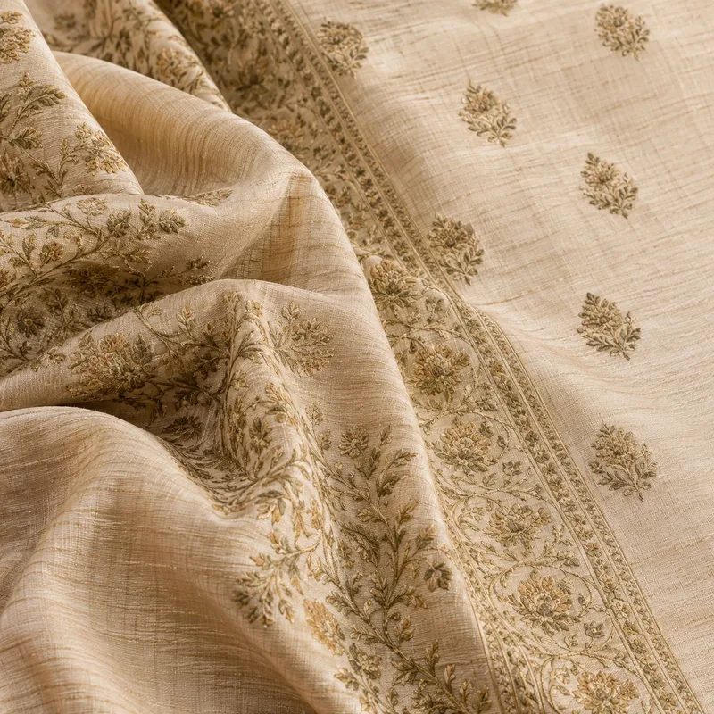
Silk clusters across India. Textured, slubby silk with body.
Festive 26PeakingSummer 27–Festive 27PeakingSummer 28–Festive 28Peaking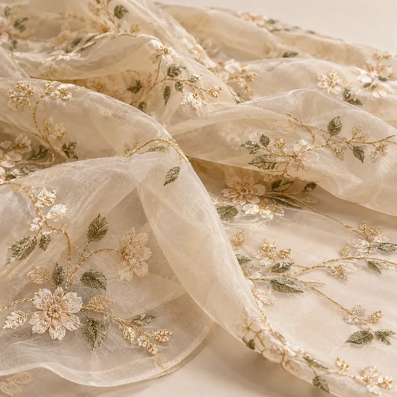
Varanasi and Surat mills. Sheer, crisp and photogenic.
Festive 26PeakingSummer 27PeakingFestive 27FadingSummer 28FadingFestive 28–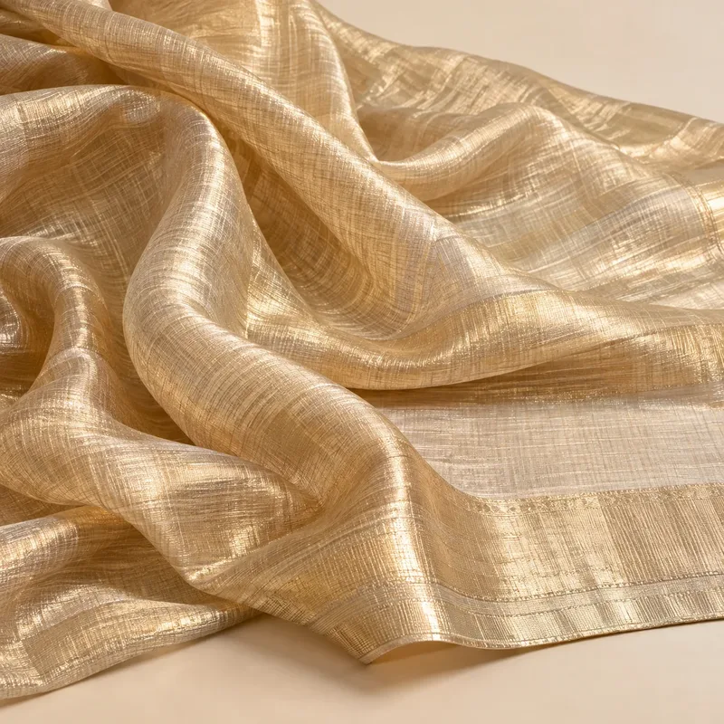
Varanasi and Surat mills. Metallic sheen woven with zari.
Festive 26RisingSummer 27PeakingFestive 27PeakingSummer 28PeakingFestive 28Fading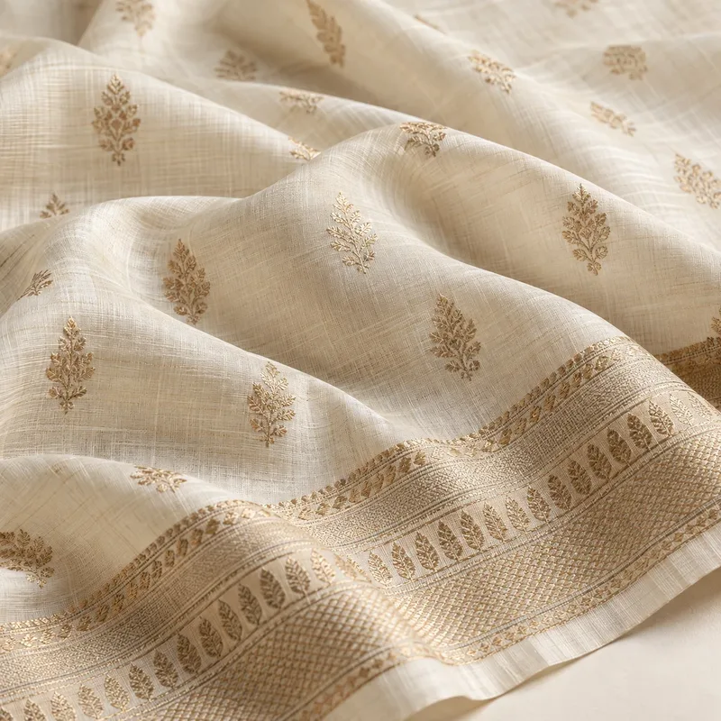
Widely available. Comfortable, breathable, with a light sheen.
Festive 26PeakingSummer 27PeakingFestive 27PeakingSummer 28PeakingFestive 28Peaking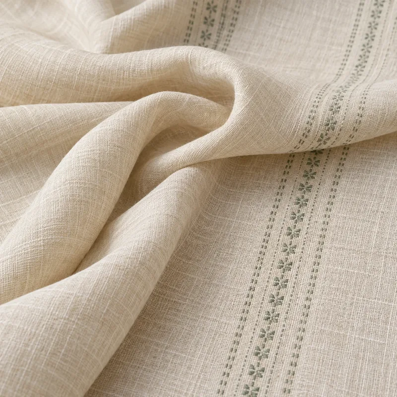
Mills across India. Breathable, textured, crisp.
Festive 26RisingSummer 27PeakingFestive 27RisingSummer 28PeakingFestive 28Rising
Craft clusters in Rajasthan, Gujarat and beyond. Plant-based dyes with soft, uneven colour.
Festive 26EmergingSummer 27RisingFestive 27RisingSummer 28PeakingFestive 28Peaking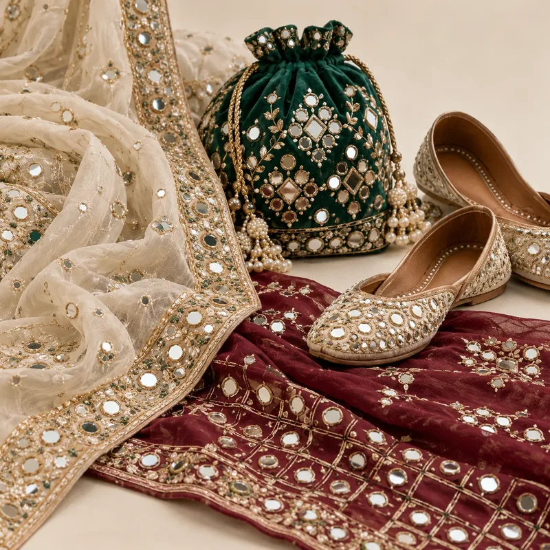
Kutch, Gujarat and Rajasthan. Small mirrors (shisha) stitched onto fabric.
Festive 26RisingSummer 27PeakingFestive 27PeakingSummer 28PeakingFestive 28Fading
Lucknow, Uttar Pradesh. Fine white-on-white shadow and knot embroidery.
Festive 26PeakingSummer 27PeakingFestive 27PeakingSummer 28PeakingFestive 28Peaking
Lucknow, Agra and other centres. Heavy metallic thread embroidery.
Festive 26PeakingSummer 27–Festive 27PeakingSummer 28–Festive 28Peaking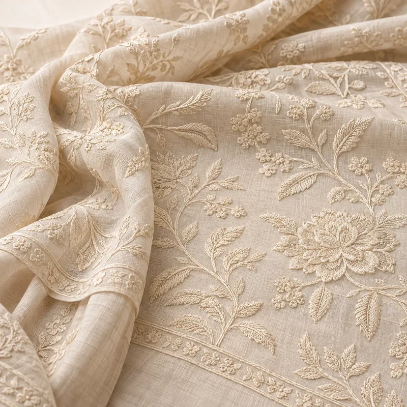
Machine and hand embroidery units. Embroidery in the same colour as the base.
Festive 26RisingSummer 27PeakingFestive 27PeakingSummer 28PeakingFestive 28Fading
Kutch, Gujarat. Bold chain stitch and mirror motifs from Rabari communities.
Festive 26EmergingSummer 27RisingFestive 27RisingSummer 28PeakingFestive 28Peaking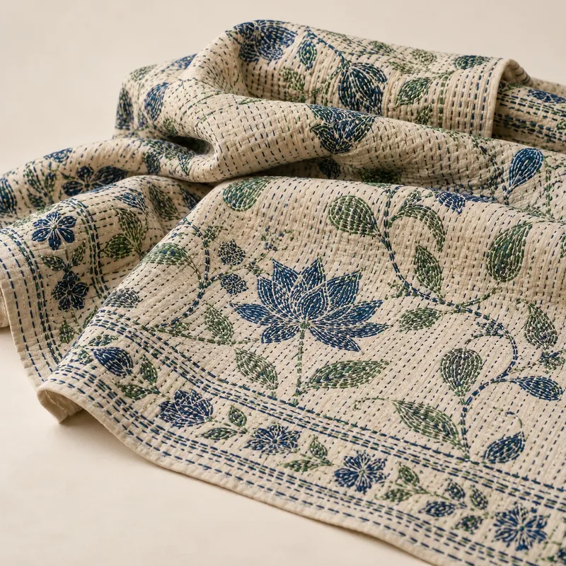
West Bengal. Running-stitch embroidery, traditionally layered.
Festive 26EmergingSummer 27RisingFestive 27RisingSummer 28PeakingFestive 28Peaking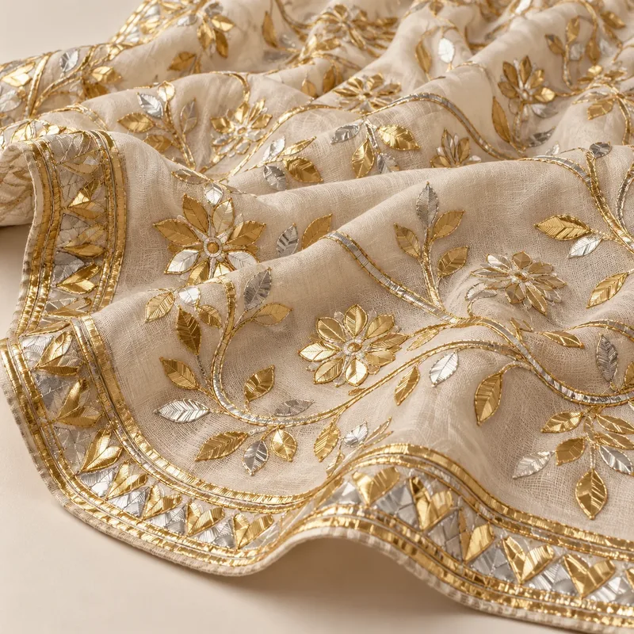
Rajasthan. Appliqué with gold or silver ribbon.
Festive 26PeakingSummer 27RisingFestive 27PeakingSummer 28RisingFestive 28Peaking
Bagru and Sanganer, Rajasthan. Hand-carved wooden blocks printed by hand.
Festive 26PeakingSummer 27PeakingFestive 27PeakingSummer 28PeakingFestive 28Peaking
Gujarat and Rajasthan. Tie-dye with tiny resist dots.
Festive 26RisingSummer 27RisingFestive 27PeakingSummer 28PeakingFestive 28Fading
Pochampally (Telangana), Odisha, Patan (Gujarat). Yarns dyed before weaving for a blurred pattern.
Festive 26RisingSummer 27PeakingFestive 27PeakingSummer 28PeakingFestive 28FadingStatuses are Forecut's forecast for India: Festive 26 (Oct 2026 – Feb 2027), Summer 27 (Mar – Jul 2027), Festive 27 (Aug – Dec 2027), and long-range outlooks for Summer 28 (Mar – Jul 2028) and Festive 28 (Aug – Dec 2028). Sources: India trends summarise public coverage of Lakmé Fashion Week x FDCI 2026 (Harper's Bazaar India, Free Press Journal), Aza Fashions festive and ethnic trend guides, Lashkaraa colour and silhouette trends 2026, Pearl Academy Gen Z trend reports, Gully Labs, Global Indian (Prada SS26 Kolhapuri-inspired sandals) and Outlook Business (Gen Z and e-retail).